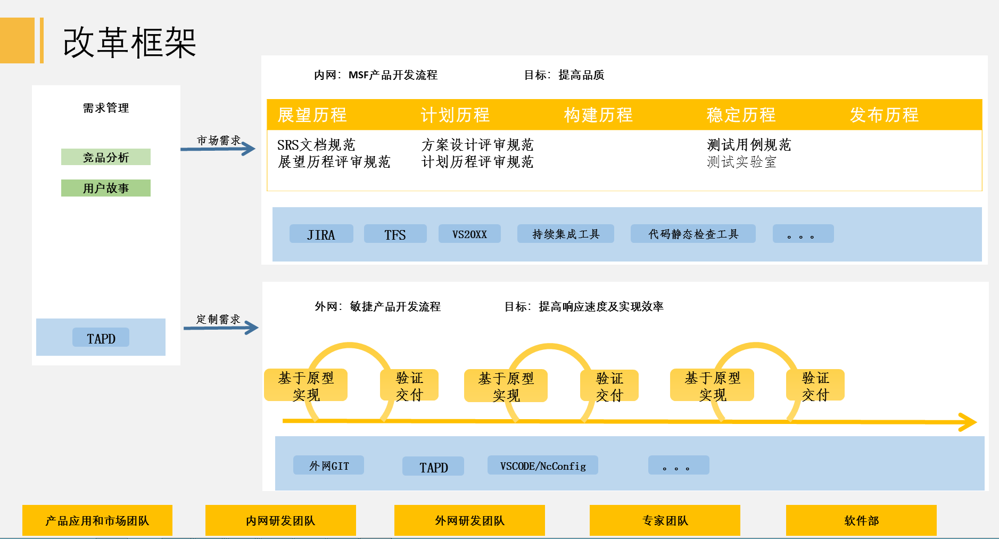
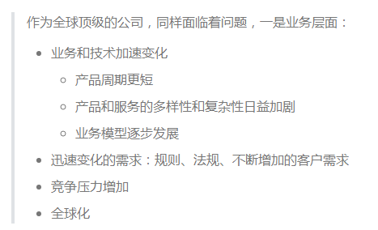
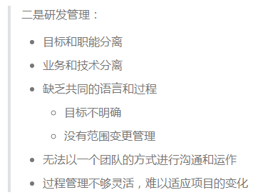
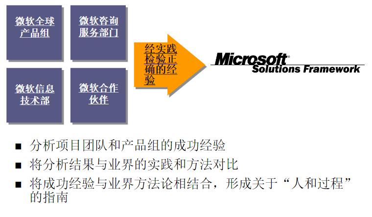

为什么是MSF
- 根据2022年研发改革框架目标，内网研发流程采用MSF。

MSF来源于微软，是微软推荐的开发软件的方法论。
微软作为全球顶级的公司，同样面临着问题。
一是业务层面，随着产品迭代的周期越来越短，以及迅速变化的需求，竞争压力越来越大，研发团队如何帮助实现业务目标，迫在眉睫。比如，如何缩短研发和发布周期，如何提高工作效率，如何协助创建新的业务模型和机会，为开拓市场提供技术支持。

二是研发管理层面。业务目标和职能分离，业务和技术分离，团队内部没有统一的交流语言，导致沟通成本较高，协助效率较低，难以适应项目的变化。

而以上这些阻碍公司发展的问题，微软经过在不同部门进行实践，MSF是确保可行性的解决方案框架。

微软团队遇到的问题，我们司空见惯，虽然我们的业务形态和产品市场和微软不同，但作为同样是做产品的公司，我们有很多相似地方，这是我们选择MSF的主要原因。更重要的是了解了MSF是什么、基本原则及团队模型和实施流程之后，决定了2022年研发进行重大改革，采用MSF进行内网的研发管理。